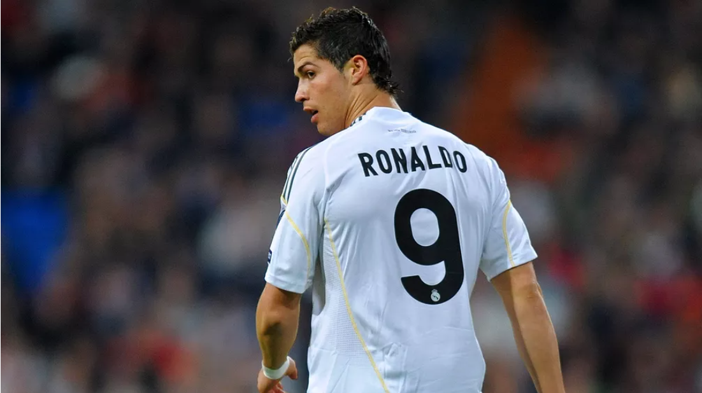

Cristiano Ronaldo está de volta a Old Trafford. Aos 36 anos, o craque português foi anunciado oficialmente pelo Manchester United, no momento em que se dava como certa sua transferência para o rival Manchester City. O United teria desembolsado € 15 milhões (R$ 92 milhões) mais € 8 milhões (R$ 49 milhões) em bônus como compensação financeira para a Juventus, que não aceitava liberar o craque sem custos. O futebolista português é sem dúvidas um dos maiores nomes da história do futebol, considerado por muitos especialistas como o maior, já tendo conquistado cinco vezes o título de melhor jogador do mundo. Para conhecer um pouco mais sobre a vida e a carreira do craque preparamos uma lista com 10 curiosidades sobre o jogador.
 10. Seu primeiro número no Real Madrid foi o 9 e não o 7
No Manchester United, clube em que conquistou sua primeira Champions League, empregou a marca CR7, pois era o dono da camisa 7 do clube inglês. Quando chegou ao Real Madrid, teve de interromper momentaneamente esta marca, pois o dono da 7 do Real Madrid na época de sua chegada era Raúl, atacante revelado pelos próprios Merengues e ídolo da torcida. Cristiano Ronaldo só conseguiu vestir a 7 em 2010, quando Raúl se aposentou. 9. História no futebol
Cristiano Ronaldo começou a jogar futebol aos oito anos de idade nas categorias de base do Clube Futebol Andorinha de Santo António, time modesto da ilha da Madeira. Em 1995, o craque português assinou por outro clube local, o Clube Desportivo Nacional, um time pouco mais conhecido na região. Após 2 anos nas categorias de base do Nacional, o gajo foi jogar nas categorias de base do Sporting Clube de Portugal, antes de se transferir para o Manchester United, Real Madrid, Juventus e agora retornar ao Manchester United. 8. Nome
Muitos fãs de futebol só o conhecem como Cristiano Ronaldo, no entanto, esse não é seu nome completo. CR7 se chama Cristiano Ronaldo dos Santos Aveiro. Seu nome é uma homenagem a Ronald Regan, um ex-presidente dos Estados Unidos, que foi muito admirado pelo pai de Ronaldo. 7. O craque não ingere bebidas alcoólicas e não fuma
Enquanto muitos jogadores “menos importantes” e outros importantíssimos para o futebol mundial curtem a noite adoidados, Cristiano Ronaldo é muito discreto e regrado em sua vida pessoal, tanto que o português não faz uso de bebidas alcoólicas e também não fuma. Reconhecendo que seu corpo é seu instrumento de trabalho, CR7 não faz uso de substâncias como fumo e álcool, o craque português perdeu seu pai quando o jogador tinha apenas 20 anos. A causa da morte de seu progenitor foi a falência dos rins e do fígado, em 2006, devido ao grave problema do alcoolismo. 6. Aniversário e histórico familiar
Cristiano nasceu em 5 de fevereiro de 1985. Ele é filho mais novo de quatro. Seu pai José, era jardineiro e bebia muito. Já sua mãe Maria, era cozinheira e faxineira, e ela trabalhava dia e noite para sustentar sua família. 5. Primeira Champions e primeira vez melhor do mundo
Em 2008 por ter levado o Manchester United ao título da Champions League e por sua incrível atuação, ganhou o prêmio de Melhor Jogador do Mundo. 4. Chegada ao Real Madrid
Em 2009 o time espanhol desbancou 96 milhões de euros para comprar o melhor jogador do mundo. Sua apresentação foi feita no dia 6 de junho no Santiago Bernabéu diante de 80 mil pessoas. 3. Honra do mundo
Quando você é Ronaldo, gols são a ordem do dia. Mas quando você excede todas as expectativas, o mundo o reconheceu. Em 2008, ele marcou 42 gols e foi premiado com a Honraria Mundial do Ano da FIFA. 2. Pagamento recorde
Cristiano quebrou tantos recordes, que você pode ficar sem fôlego tentando contar todos eles. No entanto, um recorde que realmente se destaca como sendo o jogador de futebol mais bem pago na sua idade. Em 2003, Cristiano foi contratado pelo Manchester United e recebeu 12 milhões de libras. 1. Regime de treinos
Além de ser um grande jogador de futebol, Cristiano Ronaldo também tem um porte físico que lhe rende muita admiração tanto por parte dos fãs, quanto dos críticos. Ronaldo atribui sua forma física à rigorosa rotina de treino, e à disciplina para se ater a ele.